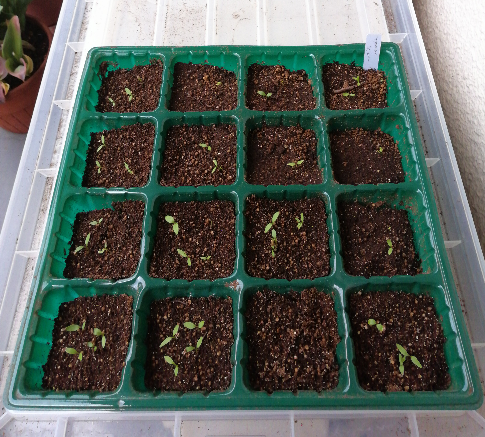

イタリアンパセリの育苗
今年（2021年）はイタリアンパセリをたくさん作る予定です。
生食するのはごく一部で、大半は電子レンジで乾燥させて「 乾燥パセリ 」にしてビンにつめて冷凍庫に保管します。指で軽くもんでパラパラとパスタやスープ、サラダなどに振りかけます。見た目もきれいだし香り高く美味しいです。１年中重宝します。
畑では一定の場所を「パセリ畑」にするのではなく、他の作物と 混植 して見ようと思います。セリ科の植物はナスやピーマンの コンパニオンプランツ 1のようですから2。
パセリは一般に移植を嫌うと言われていますが、あちこちに植えるときには苗にしたほうが管理が簡単。ということで苗作りをします。
1 種まきと育苗
セルトレーに3〜5粒ずつ種まきし ふるい を使って薄く覆土しました。パセリは発芽日数がながく2週間以上かかります。また発芽率は高くないようです。図1は種まきから15日目の様子です。セルの場所によりますが3 発芽率はまぁまぁですね。

Figure 1: イタリアンパセリの育苗セルトレー（播種後15日）
それにしてもまだ時間がかかりそうです。気長に見守る感じですね。このあと間引きして1本にして根鉢をこわさないように注意深く植え替えることにします。畑への定植は5月10日前後を予定しています4。
1.1 セルトレーを入れている容器
もう一度、図1をごらんください。セルトレーは白い容器に入っています。その実体はどこの家庭にもある「 収納ボックス 」または「プラコンテナ」。水を入れて「底面給水」も可能だしフタの閉め方しだいで温度調整できる 簡易温室 になります。あと丈夫な取っ手もついていて持ち運びが楽になります。 積み重ね も可能です。普通サイズの収納ボックスだとセルトレーが１枚しか入りませんが、プラポットならそれプラス2から3個は入ります。市販されている専用の「セルトレー底面給水トレー」はちょっと単価が高すぎます。
2 Footnotes:
Footnotes:
「 コンパニオン プランツ 」の語はすっかりカタカナ日本語として定着しています。 非カタカナ日本語では「共栄植物」「共存植物」「同伴植物」などが一般的なようです。ところでイヌやネコなどを「コンパニオン アニマル」といいますが「共栄動物」などとは言いません。「愛玩」対象ではなくて「伴侶」の側面が強調されるわけです。しかし「伴侶」は「共栄」「共存」とは別の意味合いがあります。いろいろ考え始めると面倒だからカタカナのまま使っちゃえ！ということなんでしょうね。
けど明治の初年に日本人（西周など）が英語の単語を一生懸命考えて非カタカナ日本語に置き換えてくれました。「心理学」も「社会学」もそうです。物理学ではできるだけわかりやすい日本語にすることがとても大事にされていました。新語の訳語つくりは面倒だからとさぼっちゃあいけないと思います。 洋画のタイトル もそうですね（笑）
なお bad companion というのもあって、トマトはパセリをだめにするようです。これって日本語ではなんと言うのでしょうか？ 悪友植物（笑）
発芽率 の悪いセルは覆土が多かったのだと思います。
畑は北群馬の山中（標高1,000m）です。例年5月中旬から20日ころまでに 遅霜 がおります。イタリアンパセリは 耐寒性 が強いのでだいじょうぶでしょう。